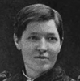

Collective Biographies of WomenAn Annotated Bibliography
Alison Booth
622.
Parkman, Mary R. Heroines of Service: Mary Lyon; Alice Freeman Palmer; Clara Barton; Frances Willard; Julia Ward Howe; Anna Shaw; Mary Antin; Alice C. Fletcher; Mary Slessor of Calabar; Madame Curie; Jane Addams. London and New York: Century, 1917; 1919; Appleton, 1938.
Search OCLC WorldCat for this title.
Search Google Books for this title.
Parkman, Mary R. Heroines of Service: Mary Lyon; Alice Freeman Palmer; Clara Barton; Frances Willard; Julia Ward Howe; Anna Shaw; Mary Antin; Alice C. Fletcher; Mary Slessor of Calabar; Madame Curie; Jane Addams. London and New York: Century, 1917; 1919; Appleton, 1938.
TOC: Mary Lyon; Alice Freeman Palmer; Clara Barton; Frances E. Willard; Julia Ward Howe; Anna Howard Shaw; Mary Antin; Alice C. Fletcher; Mary Slessor; Marie Skldowska Curie; Jane Addams.
-
Mary Lyon
-
 Alice Freeman Palmer
Alice Freeman Palmer -
 Clara Barton
Clara Barton -
Frances E. Willard
-
The statue of Miss Wilard in the Capitol at Washington
-
Julia Ward Howe
-
 Anna Howard Shaw
Anna Howard Shaw -
 Mary Antin
Mary Antin -
Alice C. Fletcher
-
Mary Slessor
-
Marie Sklodowska Curie
Search OCLC WorldCat for this title.
Search Google Books for this title.